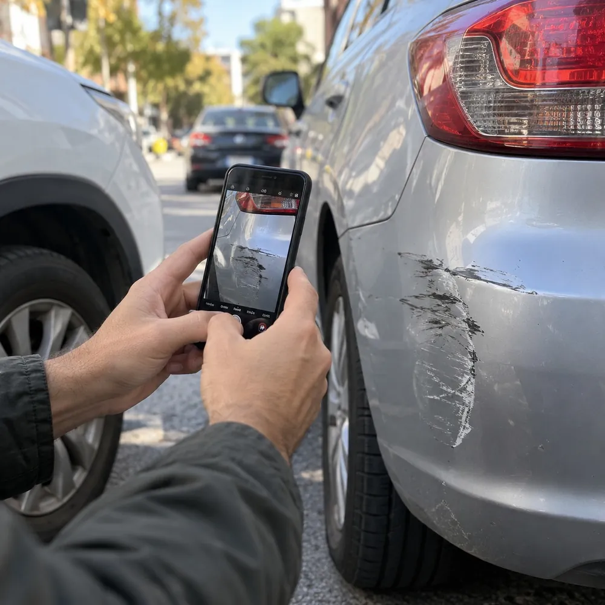

01
Siniestros viales
Choques, daños al auto y lesiones: reclamo al seguro del responsable.
Choques, aseguradoras que no pagan, ART, familia, sucesiones y jubilaciones. Contame qué pasó y te digo por dónde empezar.
Talcahuano 178, 8º D · CABA · 11 6051-2531
Fs. 01

Choques, daños al auto y lesiones: reclamo al seguro del responsable.
Cuando el seguro rechaza, demora o paga menos de lo que corresponde.
Daños a tu persona o a tus cosas que causó otra persona.
Divorcios, cuota alimentaria y régimen de comunicación con tus hijos.
Para poner a nombre de los herederos una casa, un auto o una cuenta.
Accidentes de trabajo, enfermedades laborales y rechazos de la ART.
Iniciar tu jubilación o pensión y revisar que esté bien calculada.
Contame qué pasó y te digo cómo seguir.
Fs. 02
Lo que hacés en los primeros días ordena todo el reclamo.
Del lugar, de los dos vehículos, de las patentes y de los daños, desde varios ángulos.
Nombre, DNI, patente, compañía de seguro y número de póliza. Si hubo testigos, sus teléfonos.
Avisale a tu aseguradora lo antes posible: los plazos para denunciar el siniestro son cortos.
Presupuestos, facturas, certificados médicos y cualquier gasto que te haya generado el choque.
Cada reclamo empieza igual: entender bien qué pasó, juntar los papeles correctos y no dejar pasar los plazos.
Fs. 03
Me ocupo de siniestros y asuntos civiles dentro de un estudio jurídico. Esta es mi página propia: me escribís directo, reviso tu caso y te explico con claridad cuál es el camino.
Por WhatsApp o desde el formulario. Un mensaje corto alcanza para empezar.
Me mandás fotos de lo que tengas y te digo qué falta y para qué sirve cada cosa.
Te explico cada paso y te aviso cómo avanza tu caso.
Sí. Si el choque lo causó otra persona, el reclamo se hace al seguro del vehículo responsable, sin importar la cobertura que tengas vos.
Igual se puede reclamar: quien causó el daño responde aunque no tenga seguro. Hay que ver cada caso para elegir el mejor camino.
Sí. Un rechazo o un alta que no corresponde se pueden cuestionar. Conviene consultar rápido y tener a mano los estudios médicos y las cartas de la ART.
Por WhatsApp: con fotos claras de cada papel alcanza para una primera revisión. Si hace falta algo más, te aviso qué y para qué.
Depende del tipo de caso y de cómo responda la otra parte. En la consulta te cuento qué esperar en el tuyo.
Fs. 05
Escribime por WhatsApp o dejá tu consulta en el formulario con un resumen de tu caso.